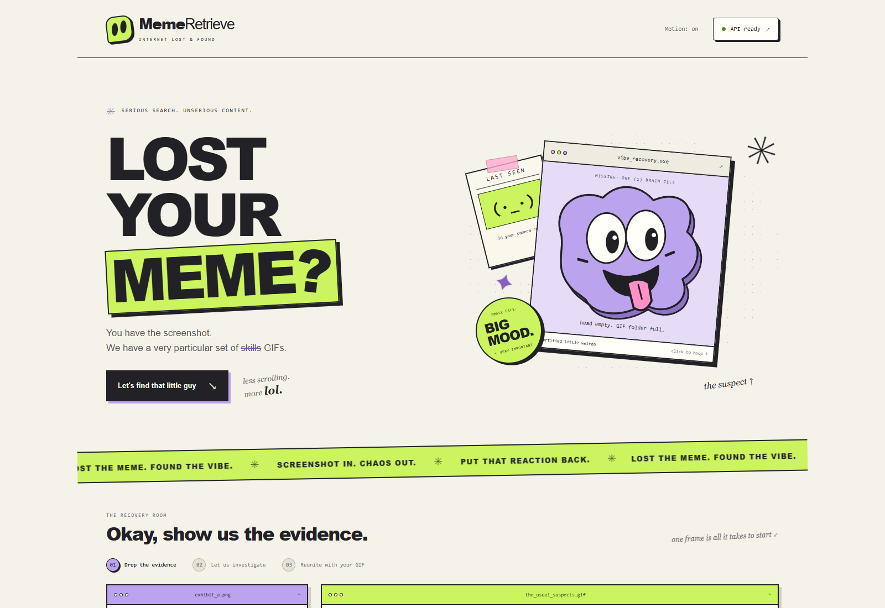
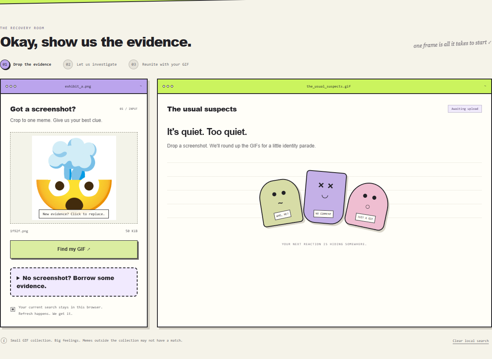
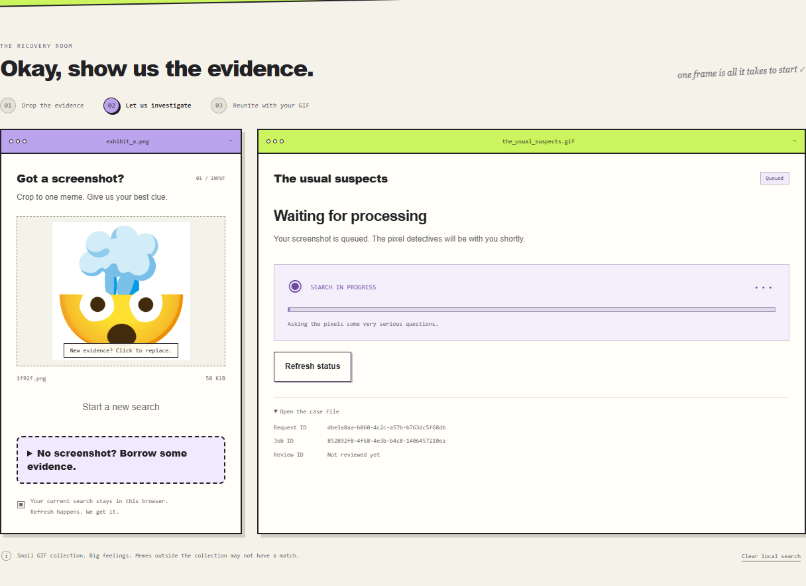
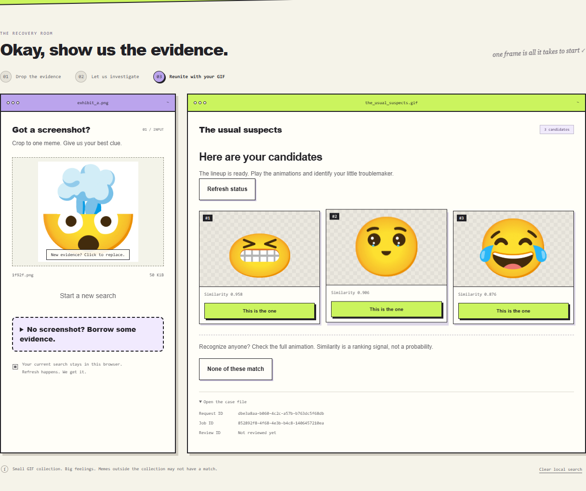
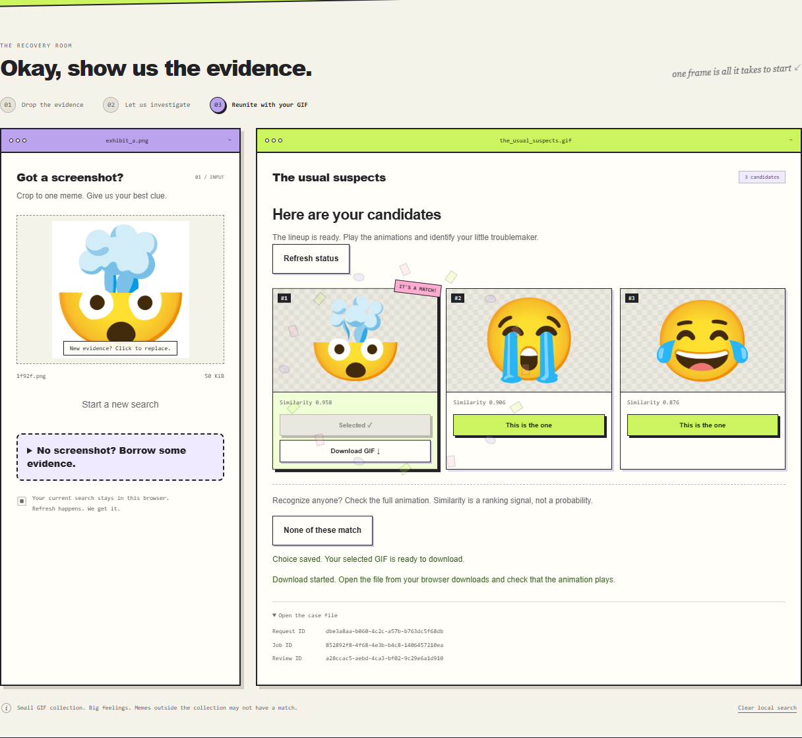
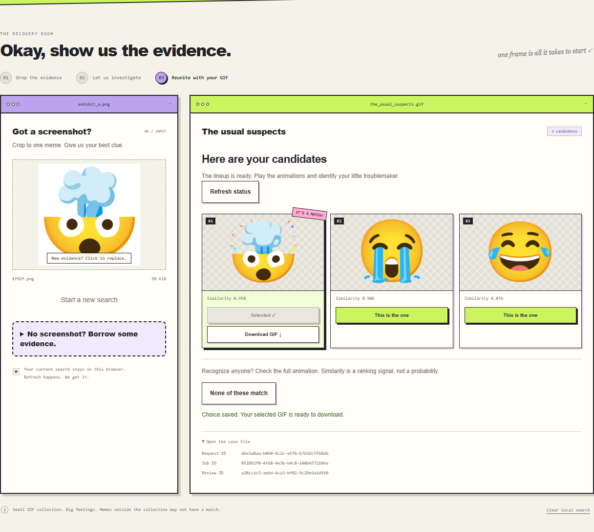
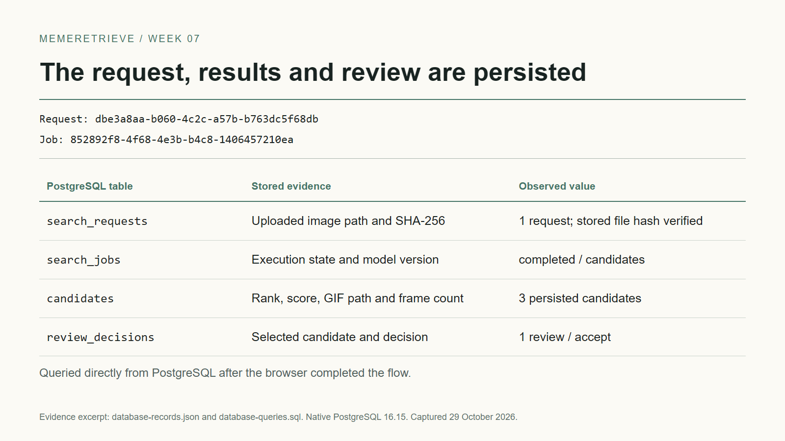
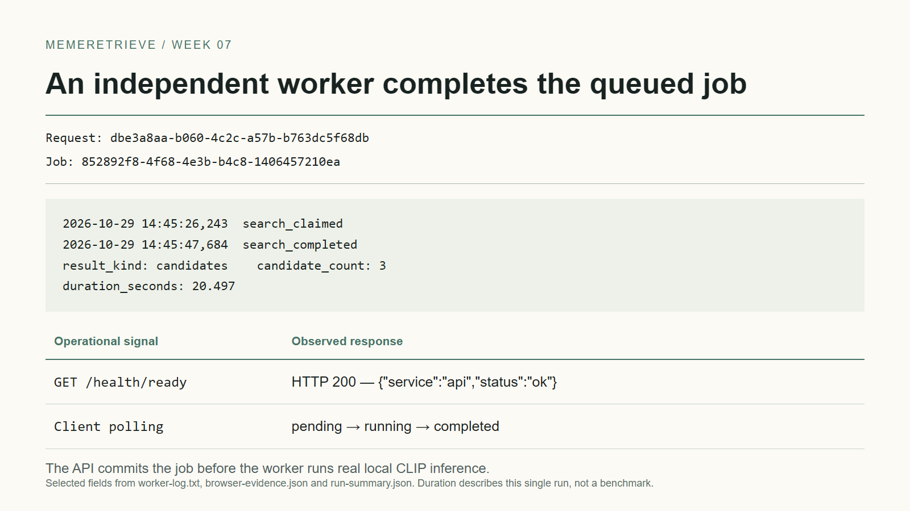
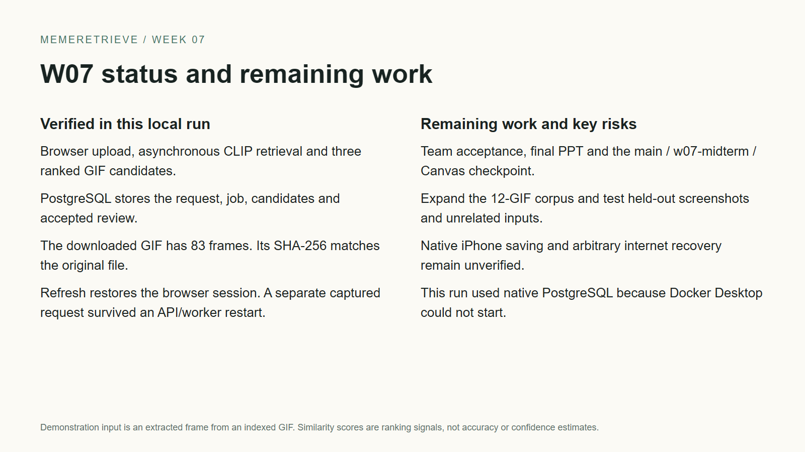
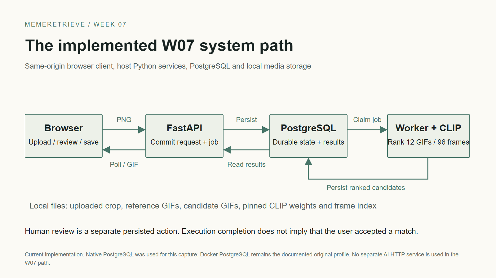

Product overview

00-product-home.png
真实运行截图和证据。PNG 可直接插入 PowerPoint；GIF 请在幻灯片放映模式下播放。开发分支 dev，正式 checkpoint 尚待验收。

00-product-home.png

01-input.png

02-async-processing.png

03-candidates.png

04-review-and-download.png

06-restored-after-refresh.png

07-database-evidence.png

08-worker-health.png

09-status-and-next.png

10-w07-system-flow.png
Google Noto Animated Emoji, CC BY 4.0. Input PNG is an extracted frame.